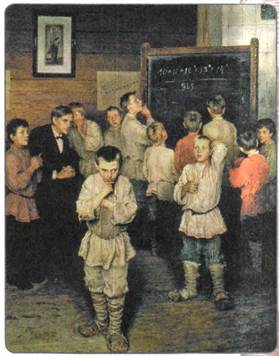
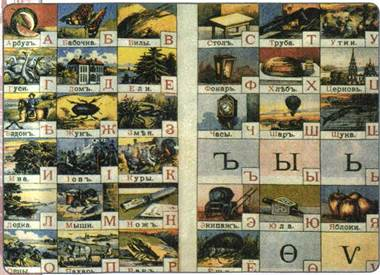
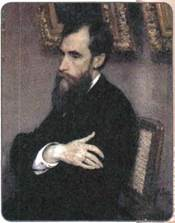
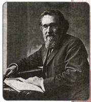
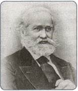
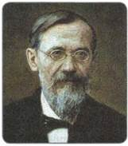

Материал для самостоятельной работы и проектной деятельности учащихся
Какие факторы способствовали тому, что российская наука вышла к концу XIX в. на передовые рубежи мировой науки?
1. Просвещение
Огромные перемены, произошедшие в России во второй половине XIX в., сказались на состоянии просвещения, которое охватывало всё более широкие слои населения.
Создание уже не на бумаге, а на деле целой системы начальных школ — церковно-приходских, земских, Министерства народного просвещения — привело к заметному росту числа грамотных, которые составляли к концу XIX в. около 20 % населения. Умели читать и писать 39 % мужчин старше 9 лет и 17 % женщин. Росло количество людей, которые впервые стали приобщаться к книжной культуре, менять свою психологию, взгляды на жизнь. Самое лучшее начальное образование давали трёхгодичные земские школы. Широкое распространение, несмотря на противодействие властей, получили воскресные школы. В них постигали азы образования рабочие, солдаты, другие представители взрослого населения.
Окрепло в этот период и среднее образование. Его давали в гимназиях (мужских и женских) и реальных училищах. К середине 90-х гг. XIX в. в мужских гимназиях училось более 150 тыс. человек, а в женских — 75 тыс. (до 1860-х гг. женского среднего образования совсем не было). Правительство стремилось отвлечь учащихся гимназий от насущных проблем, увеличивая время на изучение латинского и древнегреческого языков (на них отводилось более 40 % учебного времени). Выпускники средних учебных заведений непрерывно пополняли состав интеллигенции, игравшей такую огромную роль в развитии русской культуры.
Мощный рывок вперёд совершило высшее образование. Наряду с университетами (помимо 7 существовавших, были открыты два новых в Одессе и в Томске), всё большее значение приобретают разнообразные технические вузы. Всего число таких высших учебных заведений возросло с 7 в 1861 г. почти до 60 к концу века. Среди них особенно выделялись прекрасным преподавательским составом и высоким уровнем организации учебного процесса Технологический институт и Институт инженеров путей сообщения в Петербурге, Петровско-Разумовская сельскохозяйственная академия в Москве и др. Эти вузы успешно справлялись с подготовкой соответствующих специалистов, которых всё в большем количестве требовали сельское хозяйство и особенно промышленность.
Чрезвычайно важным и новым для России явлением стало высшее женское образование. Стремясь получить такое образование, немалое число девушек отправлялись учиться в университеты Швейцарии (единственной тогда страны, где были вузы для женщин), где многие приобщались к революционным идеям. Власти были вынуждены разрешить создание высших учебных заведений для женщин в России. В начале 1870-х гг. были открыты Высшие женские курсы в Москве и Петербурге, получившие название по именам учредивших их профессоров-историков (В. И. Герье в Москве и К. Н. Бестужев-Рюмин в Петербурге). Так Россия стала вторым в мире государством, где существовало высшее женское образование.
Активно происходила разработка передовых методов обучения и воспитания. В это внесли свой вклад многие видные деятели культуры (Н. И. Пирогов, Л. Н. Толстой), создателем же отечественной педагогической теории считается К. Д. Ушинский. Он призывал отдать дело просвещения в руки самого народа, выступал за создание школы, которая даст учащимся всесторонние и практически применимые в жизни знания, будет развивать их способности, приучать к самостоятельности. Созданные Ушинским учебные пособия использовались многие десятилетия.

Устный счёт. В народной школе С. А. Рачинского. Художник Н. П. Богданов-Бельский
К концу XIX в. в Украине насчитывалось 17 тыс. начальных школ, 129 гимназий, 19 реальных и 17 коммерческих училищ (преимущественно частных). Харьковский, Киевский, Одесский университеты стали центрами подготовки учителей, врачей и других специалистов.
2. Печать, библиотеки, музеи
Во второй половине XIX в. в связи с быстрым ростом числа читающей публики книжное дело переживало настоящий бум. Резко выросли тиражи изданий, во много раз увеличились темпы книгопечатания (от 2 тыс. названий в год в середине XIX в. до 10 тыс. названий в конце XIX в.). Заметно выросло число книжных магазинов, типографий. Среди «литературных промышленников» всё чаще появлялись издатели, стремящиеся к популяризации в народе разнообразных знаний, а то и к пропаганде определённых идей. Крупнейшим книгоиздателем такого рода был Ф. Ф. Павленков. Издававшиеся им книги, в частности серия «Жизнь замечательных людей», научно-популярная литература, дешёвые собрания сочинений классиков, пользовались огромной популярностью. Заметный след в деле просвещения оставили издатели И. Д. Сытин, А. С. Суворин.
Самыми популярными журналами тогда были «Современник», «Отечественные записки», «Русское слово» и др. Стали выходить исторические журналы «Русский архив», «Русская старина» и др., в них публиковались научные исследования и документы. К концу века в России издавалось 105 ежедневных газет.
Быстрыми темпами развивалось и библиотечное дело, причём оно тоже приобретало всё более демократическую направленность. В это время возникло немало бесплатных народных библиотек-читален, книжных складов, земских библиотек. В 1862 г. в Москве открывается Публичная библиотека, вскоре ставшая одной из самых богатых в стране по числу книг.
В 1870-е гг. в Москве начали работу два музея, главной задачей которых было распространение просвещения, — Исторический и Политехнический. В 1865 г. был открыт свободный доступ в Эрмитаж, являвшийся прежде всего собранием произведений западноевропейского искусства. Ещё в начале XIX в. возникла идея создания музея русского искусства. Практическое осуществление этой идеи связано с деятельностью московского купца П. М. Третьякова, который с 1856 г. начал собирать картины русских художников. В 1892 г. Третьяков принял решение передать свою коллекцию в дар Москве. Так родилась Третьяковская галерея. Решение Третьякова ускорило появление Русского музея в Петербурге, которому указом Александра III было передано здание Михайловского дворца.

Страницы из «Азбуки в картинках» Н. В. Тулупова. Конец XIX — начало XX в.

П. М. Третьяков
3. Наука
Во второй половине XIX в. настоящий расцвет переживала университетская наука. Возникали новые научные школы, были созданы труды, имеющие мировое значение.
Важную роль играли научные общества, которых становится всё больше: Русское математическое общество, Русское химическое общество и др.
Новым явлением стали всероссийские съезды учёных — врачей, юристов, археологов. Такие съезды давали возможность обменяться опытом, способствовали популяризации науки.
Главным доказательством выхода отечественной науки на мировой уровень явилось большое число открытий в различных областях знаний. Если в первой половине XIX в. подобных открытий было немного, то теперь они становятся явлением всё более распространённым.
В химии Д. И. Менделеев открыл один из фундаментальных законов естествознания — периодический закон химических элементов. Составленная им периодическая таблица позволила ему описать свойства ещё неизвестных тогда элементов. Менделеев известен также исследованиями в области переработки нефти, получения из неё различных продуктов, применения химических удобрений, трудами по народонаселению.
В физиологии всемирную известность получили имена И. М. Сеченова и И. П. Павлова, исследовавших деятельность головного мозга и нервной системы, механизм их реакции на воздействие внешней среды. В биологии яркий след оставил И. И. Мечников, изучавший защитные свойства организма. Основатель русской школы физиологии растений К. А. Тимирязев исследовал явления, лежащие в основе жизни растительного мира. В физике А. Г. Столетов утвердил электромагнитную теорию света, открыл первый закон фотоэффекта. В. В. Докучаев стал создателем новой науки — почвоведения. Он с учениками провёл исследование почвы всей Центральной России, выяснил многовековую историю образования разных видов почв и дал рекомендации по их лучшему использованию.
За русскими учёными этого времени числится и целый ряд открытий, имевших практическое значение и до сих пор остающихся основой жизни человечества.

И. И. Мечников
П. П. Яблочков изобрёл первую дуговую электрическую лампу, а А. Н. Лодыгин — электрическую лампу накаливания. Сначала Лодыгин использовал угольный стержень, затем металлический, в том числе вольфрамовый (как в современных лампах). М. О. Доливо-Добровольский решил проблему передачи электрического тока по проводам на значительные расстояния. Именно это открытие стало решающим для развития электроэнергетики во всём мире.
А. С. Попов стал одним из основоположников радиосвязи. 7 мая 1895 г. он первым в мире продемонстрировал работу созданных им радиостанции и радиоприёмника — беспроволочного телеграфа.
Учитель физики из Калуги К. Э. Циолковский является основателем отечественной космонавтики. Он разрабатывал теорию движения реактивных ракет и обосновал возможность полётов человека в космос.
В области гуманитарных наук создаётся грандиозное по объёму использованных материалов и основательности изложения сочинение С. М. Соловьёва «История России с древнейших времён» в 29 томах.
Ученик Соловьёва В. О. Ключевский был автором многих исследований по русской истории. Он считал, что в основе исторического развития лежат многие факторы, а главным двигателем истории является «умственный труд и нравственный подвиг». Его «Курс лекций по истории России» поражает блеском и остротой мысли.
Ещё одним крупнейшим историком стал Н. И. Костомаров, много внимания уделявший изучению народных движений. Его написанные прекрасным языком труды, в том числе жизнеописания крупнейших деятелей русской истории, способствовали распространению интереса к прошлому. Он считал, что главное состояло не в раскрытии деятельности людей, «а показе деятельной силы души человеческой».
В изучении проблем всемирной истории наиболее известен Н. И. Кареев, автор трудов по истории Франции Нового времени.
Продолжались сбор и изучение устного народного творчества, начатые ранее славянофилом П. В. Киреевским. Труды в этой области Ф. И. Буслаева и А. Н. Афанасьева сохраняют своё значение до сих пор. Глубокие исследования по истории русского языка и древнерусской литературы создал И. И. Срезневский. Огромным научным и общественным событием стал выход в 1861— 1867 гг. «Толкового словаря живого великорусского языка». Более 50 лет работал над ним писатель и государственный деятель В. И. Даль.

С. М. Соловьёв

В. О. Ключевский
4. Русские первооткрыватели
Продолжались исследования в северной части Тихого океана. Всё большее внимание уделялось изучению Северного Ледовитого океана, освоение которого было жизненно важно для России. В конце XIX в. этим активно занялся адмирал С. О. Макаров, по проекту которого был построен первый в мире ледокол «Ермак».
Значительных успехов русские географы достигли в изучении Центральной Азии. Результатом экспедиции П. П. Семёнова-Тян-Шанского на Тянь-Шань в 1856—1857 гг. стали открытия многих неведомых до того гор, озёр, ледников. Под руководством учёного были созданы уникальные издания «Географическо-статистический словарь Российской империи» и «Россия. Полное географическое описание нашего отечества». В них даётся детальное описание географии, населённых пунктов, жителей всех уголков России.
Прославленным путешественником был Н. М. Пржевальский. Он исследовал Уссурийский край, Монголию, Китай, Среднюю Азию. Среди его достижений открытие озёр, хребтов, животных (дикая лошадь Пржевальского, дикий верблюд, тибетский медведь), растений.
Не менее известны исследования Н. Н. Миклухо-Маклая. Два с половиной года прожил он среди племён северо-восточного берега острова Новая Гвинея. Его описание их обычаев, быта, культуры сохраняет научное значение и в наши дни. Путешественник стремился защитить эти народы от губительного для них натиска европейцев, пытался организовать на Новой Гвинее русское поселение.
ПОДВЕДЁМ ИТОГИ
Отечественная наука второй половины XIX в. вышла на передовые рубежи. Русские учёные внесли весомый вклад в развитие мировой научной мысли. Причинами этого явления стали те благоприятные изменения в жизни страны, которые пришли вместе с либеральными реформами, разбудили инициативу людей и способствовали научному поиску.
Вопросы и задания для работы с текстом параграфа
1. Что изменилось в системе просвещения во второй половине XIX в. по сравнению с первой половиной столетия? Каких успехов в деле просвещения удалось добиться? 2. К каким практическим результатам, переменам в жизни людей привело развитие естественных наук в России? 3. Какова была сфера интересов русских учёных-географов и путешественников во второй половине XIX в.? 4. Какие новые направления были освоены в книгоиздании во второй половине XIX в.? Объясните связь этих изменений с экономическим и общественным развитием, составьте схему.
Думаем, сравниваем, размышляем
1. Докажите, что русская наука второй половины XIX в. вышла на мировой уровень. 2. Подготовьте сообщение на тему «Технические новинки русских изобретателей и инженеров второй половины XIX в.». 3. Как вы думаете, чем объясняется интерес общества во второй половине XIX в. к гуманитарным наукам, и в частности к истории? 4. Согласны ли вы с утверждением В. О. Ключевского, что главным двигателем истории является «умственный труд и нравственный подвиг»? Аргументируйте свою позицию. 5. Изучите материалы и документы, связанные с исследованиями Н. Н. Миклухо-Маклая. Используя их и материалы художественного фильма «Миклухо-Маклай» (1947), сделайте презентацию о его биографии. 6. Выясните, какие из технических изобретений того времени используются и в наши дни. 7. В чём заключалось практическое значение открытия Д. И. Менделеева? 8. Из курса Новой истории вспомните об основных достижениях западноевропейской науки второй половины XIX в. Укажите черты, сближающие российскую и западноевропейскую науки того периода. 9. Подготовьте сообщение об одном из известных российских учёных второй половины XIX в., родившихся в вашем крае, городе или связанных с вашим регионом.